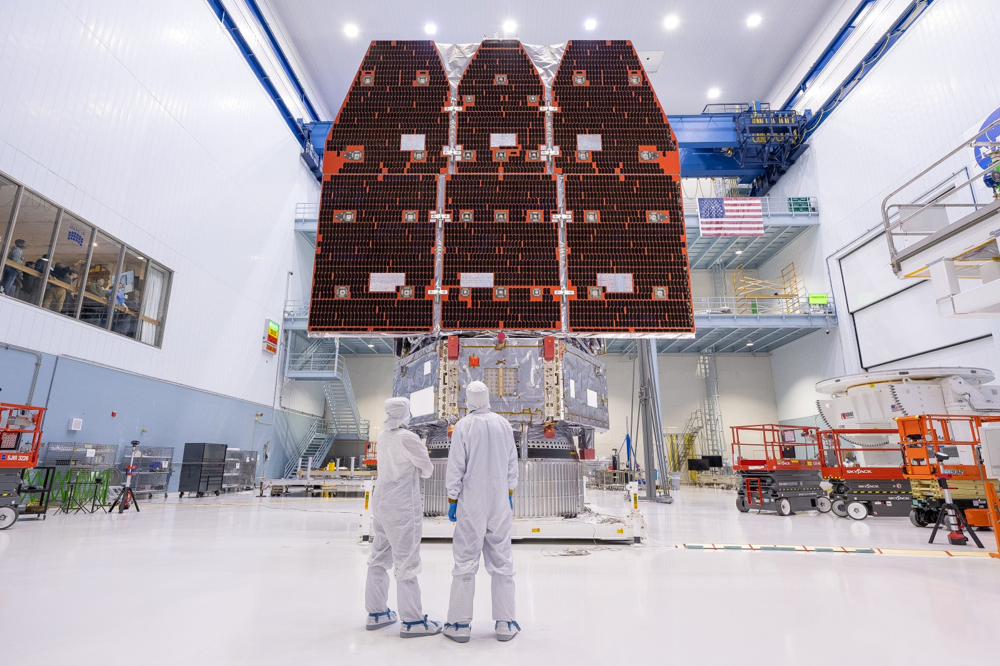
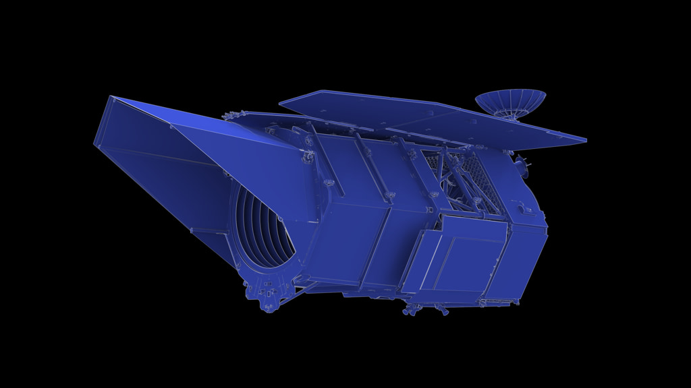
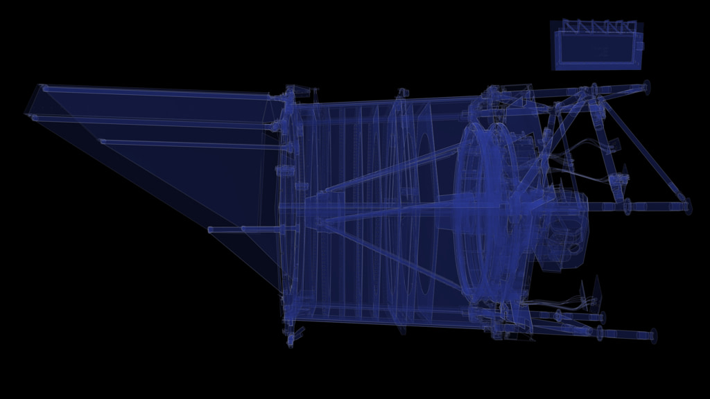
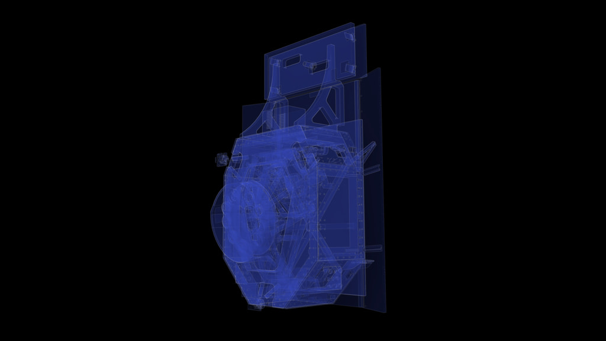
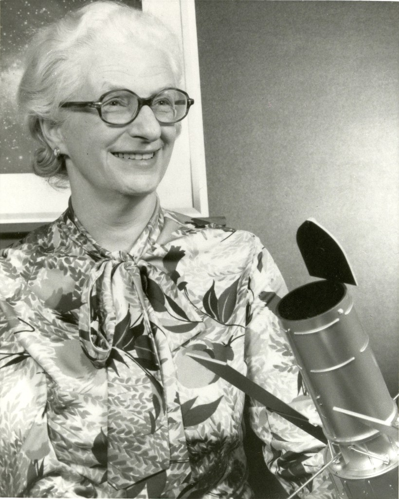

{kind=link}
{kind=link}
{kind=link}
{kind=link}
{kind=link}
Map galaxies
Patterns in galaxy positions provide a cosmic distance ruler. Comparing those patterns across time helps reconstruct the expansion history.
Astronomy & Space Science · Grades 6–12 · 35–45 minutes
What could we discover if we could see more of the sky at once?
Some telescopes study one small patch in extraordinary detail. Roman brings sharp vision to vast surveys, helping astronomers find patterns across galaxies and changes among millions of stars.

Roman has a 2.4-meter primary mirror, the same diameter as Hubble’s. Its Wide Field Instrument records near-infrared light, beyond the red end of human vision. A wider field of view means more sky in each image; it does not mean greater magnification.


Mission snapshot, checked September 6, 2026: NASA reports Roman launched August 30, 2026. Launch is the start of deployment and instrument checkout, not the start of routine science. NASA launch report.
Investigation 1
Real sky image, practice survey: this activity uses Spitzer’s infrared view of the Andromeda galaxy (NASA/JPL-Caltech), not a Roman observation. As of September 6, 2026, verified Roman science images are not available here; NASA’s launch report anticipates first images by early 2027.
Your target is a strip of sky containing 300 small tiles. Predict how many exposures each camera needs. Then change cameras and take exposures to test your prediction.
Dark tiles: not yet captured · Revealed image: captured · Gold outline: next exposure
Image: The Infrared Face of the Andromeda Galaxy · NASA/JPL-Caltech · Spitzer. Infrared measurements are mapped into visible colors; this is not how Andromeda would appear to human eyes. Inspect the complete image.
Model limits: Taking an exposure reveals part of an existing image; it does not collect new telescope data. The image’s angular scale and Spitzer’s observing wavelengths are not a Roman pointing simulation. this is an idealized 100:1 area comparison, based on NASA’s description of Roman’s field of view as at least 100 times Hubble’s. The squares are not real detector footprints. Exposure duration, overlap, detector gaps, filters, and telescope movement are omitted. This is not a claim that every observation is 100 times faster.
The narrow camera needs 300 exposures; the wide camera needs 3. The area ratio is 100:1, but the width ratio for equally shaped fields is only 10:1. A larger survey samples more objects, making rare events easier to find. Astronomers still trade area against depth and repeat visits.

Investigation 2
When a foreground object passes nearly in front of a distant star, gravity can bend and magnify the background star’s light. This is gravitational microlensing. A planet near the foreground star can add a brief disturbance to the brightening.
Illustrative curves, not Roman data or a physical lensing calculation. Gold dots are sampled measurements; the blue curve is the underlying model. Real signals include noise, can have dips or complex shapes, and require competing explanations to be tested.
A large camera sees many stars, but a short event can occur between visits. In this example, sparse observations miss the planet’s brief bump. A candidate signal needs careful modeling and checks; a bump alone does not prove there is a planet.
Dark matter is inferred from gravitational effects, including bent light and galaxy motions. Dark energy is the name given to the unknown cause of the universe’s accelerating expansion. They describe different problems, and Roman will not photograph either as a glowing substance.
Patterns in galaxy positions provide a cosmic distance ruler. Comparing those patterns across time helps reconstruct the expansion history.
Weak gravitational lensing subtly changes apparent galaxy shapes. Statistics across many galaxies reveal intervening matter and how structure has grown.
Type Ia supernovae can be calibrated as distance indicators. Their brightness and redshift help test how expansion has changed.
These methods give different checks on the same cosmic story. Agreement strengthens a model; disagreement may reveal a measurement problem or new physics.
The Wide Field Instrument looks for changes in starlight across crowded fields. The Coronagraph Instrument tries a different approach: suppressing a bright star’s glare so a faint planet can be imaged beside it. Its masks and controlled mirrors test technologies for future observatories. It is not a promise to photograph Earth twins or detect life.

Nancy Grace Roman (1925–2018) was NASA’s first chief of astronomy. She helped turn the idea of a large space telescope into a supported scientific program, earning the nickname “mother of Hubble.” Her work reminds us that discovery takes scientific insight, engineering, leadership, and the ability to build support for a shared idea.
Discuss: Why might organizing a mission be just as necessary as inventing its instruments?
A survey sees millions of stars, but a possible planet signal lasts only a short time. Which change most directly helps record its shape?
Choose an answer to check your reasoning.
Begin with a 5-minute prediction about camera width and area. Spend 10 minutes comparing surveys, 10 investigating sampling, and 10 connecting the observations to mission science. Use the last 5 minutes for the exit ticket. For younger learners, focus on coverage and repeat visits. Extend with the square-root relationship between area and width and a discussion of survey tradeoffs.
Photographs, NASA engineering illustrations, and the Spitzer sky image are labeled separately. The microlensing graph is an original teaching model. See the image credits, download sources, and reuse notes. NASA imagery is used for educational purposes under its published media guidelines; no NASA endorsement is implied. Mission facts checked September 6, 2026.
Continue with The Expanding Universe or Planetary Systems.
{kind=link}